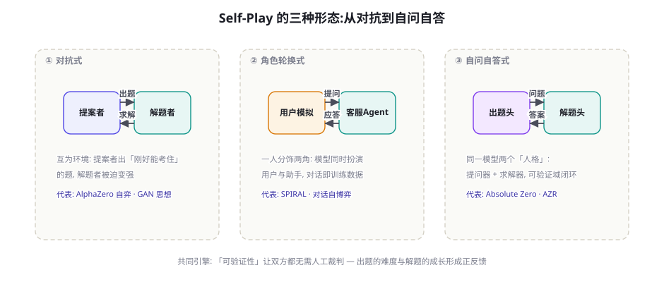
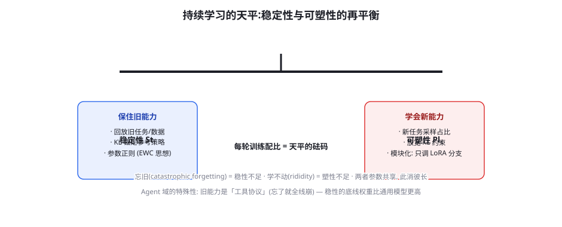

Self-Play 与持续学习：Agent 的自我进化
第 45 章的 Agent RL 还依赖外部供给的任务，第 47 章的飞轮还依赖真实流量的喂养——本章把「外部依赖」也去掉：模型自己给自己出题、自己解题、自己验证（Self-Play 与 Absolute Zero 路线），以及在部署后用持续的小步训练吸收新环境、防住遗忘（持续学习与稳定性-可塑性平衡）。这是训练篇的最后一章：当「数据、任务、验证」全部内生化，训练就从「项目」变成了「生命」。
Self-Play：自己跟自己下棋的智慧

Self-Play 的历史地位来自 AlphaZero：不需要任何人类棋谱，自我对弈 + 胜负验证，从零超越人类几百年积累的棋艺——「数据可以自己生产自己，只要验证信号足够硬」。搬到语言模型上，三种形态各有代表：① 对抗式——一个模型扮演「提案者」（出题/构造环境挑战），另一个扮演「解题者」，提案者的奖励是「考住解题者但不至于完全考死」（维持黄金训练区，第 45 章课程的博弈论实现）。② 角色轮换式——对话场景天然适合：同一模型既演用户又演客服，自导自演整段对话，用户满意度可验证的任务里整段对话就是训练数据。③ 自问自答式——Absolute Zero（AZR, 2025, arXiv:2505.03335）的标志性设计：一个模型带两个「人格」——提案者人格生成代码任务（输入-输出对），求解者人格解题，任务的可执行性本身就是验证器（代码跑一遍就知道输入输出对不对）——整套循环零人类数据、零人工裁判，纯靠 Python 解释器当上帝。AZR 在数学与代码推理上的零样本提升证明：可验证域里，「学习材料」可以完全内生化。
直觉的担心是：自己跟自己打，水平会互相拉平（像两个臭棋篓子越下越臭）。AlphaZero 与 AZR 都没有这个问题，原因是一个精妙的正反馈结构：提案者的最优策略不是出「最难」的题，而是出「当前解题者刚好解不出」的题——太难的题双方都无从学习（梯度为零），太易的题没有信息量；「刚好解不出」的题目恰好落在黄金训练区，解题者每次进步都会让「刚好解不出」的门槛上移，提案者被迫出更难的题——难度自动追踪能力，能力自动被难度拉扯。这就是「合成难度梯度」：课程（第 45 章）不需要人来设计了，博弈结构本身就是课程引擎。它的失效条件也清晰：当「可验证性」崩塌（验证器有漏洞，第 46 章）或「提案者学会出验证器盲区的怪题」（奖励黑客的出题版），正反馈变成怪题正反馈——Self-Play 系统的监控重点就一条：抽看新生成任务的质量分布。
Absolute Zero 与可验证性的边界
AZR 的设计里最值得学习的不是「零数据」，而是对「可验证性边界」的显式处理。它把任务分为三类，各自有独立的验证器与归纳偏置：归纳任务（给输入输出对，猜程序——验证：程序跑在这些对上）、演绎任务（给程序和输入，预测输出——验证：直接执行）、溯因任务（给程序和输出，反推输入——验证：构造的输入真的能产生该输出）。三类任务交替出现，模型在「学规则—用规则—反推规则」之间循环，认知多样性与第 39 章的「任务类型多样性」纪律暗合。它的边界同样诚实：AZR 依赖 Python 解释器这个「外部上帝」——可验证域（代码、数学、模拟环境）内 Self-Play 可以自转，出了这个域（开放写作、价值判断）就需要人类信号。这个边界与前章的结论完美衔接：开放域的「分数」只能当偏好信号（第 46 章），Self-Play 在开放域的对应物是「辩论与相互评审」（两个模型互相批判对方的作品，人类只做最终仲裁——第 57 章 Judge 讨论里的「辩论式评审」），自转的引擎还是要等「开放域验证器」的成熟。
AZR 的训练细节里有一个容易被忽视的精妙设计，值得单独拆解：任务难度与验证通过率的联合过滤。提案者生成的任务不是全部进训练池——太简单的（解题者全对）与太难的（全错）都被丢弃，只保留「部分正确」的任务（黄金训练区的 Self-Play 版）。这个过滤器由「当前解题者」的通过率动态定义，于是训练池的难度随着解题者的成长自动上移——上面的「合成难度梯度」不是靠提案者的「自觉」，而是靠这个无情的统计闸门。实现上还有个反直觉的细节：提案者的奖励不来自「题目本身的质量评分」（那需要一个裁判），而来自「解题者的表现」（部分通过 = 提案者得分最高）——这消除了对裁判的依赖，让整个系统只需要一个解释器。设计自博弈系统时，把「裁判依赖」逐个消除的清单是核心设计工作：能用执行结果判的别用模型判，能用统计闸门判的别用规则判——每消除一个裁判依赖，系统就少一个可被黑客的环节。
持续学习：部署不是训练的结束
模型上线后的世界不会静止：新工具接入、业务规则改版、用户行为漂移（第 92 章分布漂移的运维视角）。持续学习（Continual Learning）要回答的问题：如何让已部署的模型「小步跟上」，而不为每一次环境变化付出全量重训的代价。它的核心张力是著名的稳定性-可塑性困境（Stability-Plasticity Dilemma）：稳定性（记住旧的）与可塑性（学会新的）共享同一组参数，此消彼长——极端稳定学不进新东西，极端可塑就把旧能力忘光（灾难性遗忘）。

| 策略族 | 机制 | 优点 | 代价 |
|---|---|---|---|
| 回放族 (Replay) | 混入旧任务/旧数据的缓冲池（第 45 章经验回放的数据层） | 简单有效，遗忘控制最直接 | 存储与配比管理；旧分布代表性衰减 |
| 正则族 (Regularization) | EWC 式参数重要性加权 + KL 锚定参考策略（第 43 章） | 无存储开销 | 重要性估计难；长程漂移累积 |
| 架构族 (Architecture) | 为新任务分配独立 LoRA 分支 / 适配器，按任务路由 | 新旧物理隔离，零遗忘 | 分支爆炸；任务间知识不共享 |
| 元学习族 (Meta-Learning) | 训练「学会快速适应」的初始化（MAML 思想） | 新任务适应最快 | 训练复杂；LLM 规模上工程不成熟 |
① 回放池的「代表性漂移」——回放池是六个月前攒的，业务早就变了：旧任务保护着一个「已不存在的世界」。纪律：回放池定期按当前流量重构（保 30% 老代表性 + 70% 新样本），并且回放池本身要过质量闸门（第 47 章）。② 「改进评测」与「能力评测」混用——持续训练最容易犯的评测错误：只测新任务通过率涨了就上线，通用基线与旧任务基线没跑（第 45 章的遗忘防线在持续学习里是生死线——工具协议的遗忘是全线崩塌式的）。三套基线（新任务/旧任务/通用能力）每轮必跑，任何一套掉超阈值就回滚。③ 把持续学习做成「无人值守」——「自动吸收线上数据自动更新」的愿景很美，但数据污染（第 47 章）、奖励黑客（第 46 章）、分布突变都会被自动管线放大。纪律：持续学习管线保留「人工闸门」——每轮更新的发布决策必须有人签字，自动化的是训练与评测，不是发布。
持续学习管线的代码骨架
class ContinualLoop:
"""三路径分级 + 三基线门禁 — 持续学习的最小安全框架。"""
def on_feedback(self, traj):
if self.needs_prompt_fix(traj): # 热路径: 提示层
self.update_prompts_or_tools(traj)
elif self.behavior_gap_confirmed(traj): # 温路径候选
self.buffer.add(traj) # 溯源元数据随行
def weekly_cycle(self):
if self.buffer.size < MIN_BATCH or not self.env_stable():
return # 冷静期: 数据不足/环境抖动不训
candidate = train_increment(
base=self.prod_model,
new_data=self.buffer.fresh(),
replay=self.buffer.rebuild( # 回放池重构:
old_ratio=0.3, # 30% 老代表性
version_filter=CURRENT_ENV), # 环境版本过滤
kl_anchor=self.prod_model) # 正则族: 稳性砝码
gates = { # 三基线门禁:
"new": eval(candidate, self.eval_new),
"old": eval(candidate, self.eval_regression),
"general": eval(candidate, self.eval_general),
}
if any(g.drop > THRESHOLD for g in gates.values()):
return self.alert(gates) # 任一基线塌方 → 熔断
return self.stage_release(candidate) # 灰度发布, 人工签核这段骨架里埋着本章全部纪律的落点：环境版本过滤（外生冲击防线）、回放池重构（代表性漂移防线）、KL 锚定（正则族）、三基线门禁（遗忘防线）、人工签核（无人值守防线）。持续学习系统的工程复杂度不在训练代码——训练部分与第 39/43 章完全同构——而在「什么情况下允许训练、什么情况下必须停下来」的规则系统。这段骨架的每一个 if 都是一次真实事故的教训（社区里这类事故的报告极少，因为持续学习的失败是静默的——分数慢慢滑，直到某天用户开始投诉）。
把视角拉高一层，Self-Play 与持续学习其实是同一个问题的两面：「模型与环境谁先变」的协调问题。Self-Play 里环境（任务）由模型自己生成，两者同步进化——解决的是「学习材料从哪来」；持续学习里环境由外部世界推动，模型被动追赶——解决的是「变化从哪吸收」。两个方向合起来，就是 Agent 系统的「新陈代谢」：内部循环（Self-Play）制造多样性，外部循环（持续学习）注入现实性——缺一个都会病：只有内部的系统漂向「怪题自嗨」（前文三怪招），只有外部的系统漂向「被动挨打」（环境变了模型还在原地）。健康系统的月度节奏通常是：外部循环供料（真实流量 → 缓冲池）、内部循环扩产（Self-Play 或合成管线补充任务多样性）、两者按第 47 章的配比纪律汇入同一训练管线、三基线门禁放行。到这一章为止，你已经拥有完整的「模型生命周期」视角：出生（预训练/SFT）→ 成长（RL/蒸馏）→ 成人（部署）→ 终身学习（本章）。训练篇在此闭环。
再深入持续学习的一个细粒度问题：「学新」应该动哪些参数。全参更新是稳定性风险最大的选择；实践中的参数粒度阶梯从保守到激进：① 只调 LoRA 分支（最保守）——新任务用独立 LoRA，主干冻结，物理隔离零遗忘；分支一多路由变复杂，适合「任务类型离散清晰」的场景。② 共享 LoRA + 回放——所有任务共用一个适配器，靠回放池保持稳性；容量有限但知识共享，适合「任务族内演化」的场景（如客服流程的版本迭代）。③ 解冻部分主干（选择性）——按梯度重要性只放开「与变化相关」的层（通常是高层），底层（语言与格式能力所在）冻结——工程上介于两者之间。④ 全参 + 强锚定（最激进）——KL 系数加大、回放比例提高，适合「环境大改版」的一次性重校准（不是常态操作）。选择的经验法则：变化的「面积」决定粒度——一个工具改版选 ①，流程小改选 ②，业务重构选 ③④。把参数粒度写进团队的持续学习章程，能避免「每次更新都全量重训」的粗放循环——那是稳定性的头号杀手。
Agent 域的持续学习特例
把通用持续学习放到 Agent 语境，有三个特殊的考量维度：① 工具协议是「单点稳定性」——通用对话能力遗忘 5% 用户几乎察觉不到，工具调用格式遗忘 5% 就是 5% 的任务全线失败（第 44 章的格式脆弱性）——协议相关的参数（几乎总是 LoRA 主干部分）在持续学习里要最高的保护等级，架构族策略（协议分支独立）在这里物超所值。② 环境版本是「外生冲击」——工具接口升级（v1→v2）对模型相当于「世界的物理常数变了」：老轨迹自动失效，回放池里的 v1 数据继续训练会教坏模型。工程对策：环境版本戳进轨迹元数据（第 47 章溯源元数据的价值），版本切换时旧版轨迹降权或隔离。③ 「持续学习」与「持续提示工程」的分工——很多「模型过时了」的问题其实是「提示过时了」（工具描述没更新、新流程没进 SOP 摘要）——先做提示层的持续维护（第 17 章），确认行为缺口在参数层，才进训练管线。这与第 48 章「先提示极限测试再立项蒸馏」是同一条纪律在时间维度上的重演：轻武器持续校准，重武器才持续换装。
用最小成本体验「灾难性遗忘」与「回放的救赎」：取一个 7B/1.5B 小模型，用 200 条「工具调用 SFT 数据」训练一轮（LoRA 即可）；然后用 200 条「纯写作数据」再训练一轮（模拟持续学习的新任务）；前后各跑一次工具调用评测。你会看到第二轮训练后工具能力显著下降（遗忘实锤）。然后重做第二轮，但混入 30% 的第一轮数据——对比遗忘幅度。这个两小时的实验会给你三个体感：遗忘有多快、回放配比的杠杆作用、以及「为什么评测基线必须跨任务常备」。如果时间富余，再试第三个变体：第二轮用独立 LoRA 分支（架构族），验证「物理隔离」的零遗忘效果。
关于「Self-Play 与人类数据的关系」再做一个必要的平衡论述，因为「零人类数据」的宣传语容易造成误读。AZR 式系统真的是从零开始吗？严格地说，模型的「起跑姿势」是人类数据给的——预训练赋予了语言能力、代码语法、任务理解；Self-Play 只是在这个基础上的「增压器」。证据：同样的 AZR 循环套在 1B 模型上远不如套在 7B 上有效（起跑能力不足，提案者出不出合格题目）。正确的理解是「人类数据定下限，Self-Play 抬上限」——这与 AlphaZero 的叙事一致（棋规是人类定的、棋力是自我对弈长的）。对工程团队的含义：不要指望 Self-Play 救一个基础薄弱的模型（先把 SFT 做扎实，第 39/44 章）；也不要满足于人类数据的天花板（能力上来后，Self-Play 是最便宜的增量来源）。两条腿的次序不能乱：先模仿后博弈，与「先 SFT 后 RL」的冷启动定律（第 45 章）是同一条定律在数据维度上的重演。
补充一个与 Self-Play 运营直接相关的「成本视角」：自博弈循环的算力消耗结构与传统 RL 不同——它的大头不是训练（梯度更新），而是双倍生成（提案者出题 + 解题者作答）与验证执行，生成:训练的 token 比可达 10:1 以上。预算规划时要按「每提升一个百分点的通过率需要多少对弈轮次」来估（AZR 论文的曲线显示前期收益陡、后期渐缓的典型 RL 形态），并设置收益熔断线（连续两轮通过率提升 <1% 即停——预算挪去扩充验证器吞吐或任务多样性，往往比硬推轮次更划算）。这与第 46 章奖励工程的「剪刀差监控」合并成 Self-Play 的两张必看曲线：能力曲线（外生锚点）与成本收益曲线（每轮增量）——两张曲线一起看，Self-Play 才是一项投资而不是一场信仰。
三个高频疑问
Q：Self-Play 需要多大的模型才能转起来？经验答案是「模型要能可靠地生成格式合法的出题与解题输出」——7B 级是下限（再小则提案者产出的任务大量无效，循环空转），32B 级是舒适区。更关键的不是规模而是验证器的吞吐：AZR 式循环每轮要执行成千上万段代码，解释器沙箱的并发能力决定训练速度——Self-Play 的瓶颈序列是「验证器吞吐 > 任务质量 > 模型规模」，又一次验证本篇的主旋律：基建（环境/验证器）先于算法。小团队若资源有限，把「出题」外包给规则模板 + 参数随机化（低成本版提案者），只让模型做解题者，是性价比最高的入门形态——Self-Play 的收益一半来自「题目源源不断」，而非「出题者多聪明」。
Q：持续学习的频率怎么定？每天更新还是每季度更新？由「环境变化速度」与「更新成本」共同决定，实用框架是把变化分级处理：热路径（天级）——不训练，只更新提示与检索内容（工具描述、知识库）——95% 的「模型过时」问题在这里解决；温路径（周/月级）——积累足量新数据后跑一轮 LoRA 增量训练 + 三基线回归（这是「持续学习」的主战场）；冷路径（季度级）——全量评估、基座版本升级决策、蒸馏管线重跑（第 48 章）。频率的误区是把「温路径」当「热路径」用（周周全量重训）——训练管线的固定开销（评测三基线、发布验证）会吃掉所有收益。把「什么变化走哪条路径」写成团队章程，比任何训练技巧都更能决定持续学习的成败。
Q：Self-Play 学出的「怪招」会不会在生产上翻车？会，而且这是 Self-Play 落地的头号风险——博弈环境里的最优策略未必是真实环境里的好策略（博弈论里的「过拟合到对手」）。三类已见过的怪招：规则钻营——提案者发现某类任务验证器写得松，批量出这类题，解题者批量刷这类分；语言漂移——双方在长期博弈里发展出「彼此懂的简语」（类似双胞胎密语），单看每条轨迹都合法但已偏离人类语言分布；目标窄化——互搏把能力收敛到博弈覆盖的任务族，族外的能力悄悄退化。防线都是同构的：外生锚点——真实任务集（第 54 章评测）定期考 Self-Play 模型，分数脱锚就熔断；语言分布监控（困惑度对齐公开语料）；通用基线常备（三基线纪律）。Self-Play 是强大的内燃机，但发动机不能自己当方向盘。
本章在全书网络中的连接：上游是第 43 章（RLVR——Self-Play 的验证器基础）、第 45 章（课程学习——Self-Play 是课程的博弈论自动化）、第 47 章（数据飞轮——Self-Play 是飞轮的「零外部输入」极限形态）；横向与第 48 章（蒸馏——小模型持续成长的三条粮食线）互为补充；下游通向第 54 章（评测——外生锚点的提供者）、第 92 章（In-context 强化学习——「环境内学习」的理论根基）、第 98 章（涌现与 Scaling——Self-Play 提升的上限问题）。作为训练篇终章，它把第 39-48 章的所有机制（SFT/DPO/RL/课程/奖励/合成/蒸馏）组装成一个自我维持的系统——训练的终点是「让训练自己持续下去」。
最后一段留给一个前瞻性的开放问题，作为训练篇的收尾思考：「持续」的终点是什么？人类的学习有一个自我巩固的机制——睡眠中的记忆重整，让白天的经验被选择性固化。模型侧的对应研究刚刚起步：「离线巩固」（用生成式回放把在线经验重演一遍再固化）、「经验摘要」（把轨迹压缩成可复用的技能库——第 25 章记忆系统的训练版）、「技能发现」（从大量轨迹里聚类出可命名的原子技能，作为未来任务的先验库）。这些方向若成熟，Agent 的持续学习将从「参数的缓慢漂移」升级为「技能的主动积累」——模型真正拥有「履历」。在那之前，本章给出的纪律（三基线、三路径、外生锚点、参数粒度）是当下最可靠的工程答案。训练篇终章的最后一句话：所有训练技术的终点都不是「更强的模型」，而是「一个能够持续变得更强的系统」——你现在手里已经有了建造这个系统的全部零件。
一个容易被忽视的组织纪律补充：持续学习需要「变更日志」文化。模型每一轮增量更新的「变更说明」（什么数据进了池、什么策略被动用、三基线分数变化、谁签核的发布）必须像代码变更一样有 commit 式记录——三个月后「模型为什么突然开始拒绝某类请求」的问题，答案几乎总在某个变更日志里。这份记录还是第 63 章幻觉治理与第 65 章合规审计的法定证据链（监管问询时「模型何时因何数据发生变化」是标准问题）。变更日志的成本极低（模板化五分钟一轮），而它是训练系统与工程系统在治理层面的接口——写训练代码的人容易轻视文档，但持续学习把训练变成了长期运行的服务，服务需要运维文档，训练管线也不例外。
本章小结
- Self-Play 三形态：对抗式（提案者 vs 解题者）、角色轮换式（自导自演对话）、自问自答式（AZR 双人格）——共同引擎是可验证性。
- 合成难度梯度：提案者的最优策略是「刚好考住」，难度自动追踪能力——博弈结构本身就是课程引擎。
- AZR 的启示：可验证域内零人类数据自转可行；出域则需人类信号——可验证性边界是 Self-Play 的国界。
- 持续学习四策略族：回放（主流）、正则（KL 锚定）、架构（LoRA 隔离——工具协议保护神）、元学习（远期）。
- Agent 特例：工具协议是单点稳定性、环境版本是外生冲击、先提示层维护再训练层更新。
- Self-Play 三怪招（规则钻营/语言漂移/目标窄化）统一防线：外生锚点 + 分布监控 + 三基线常备。
自测题
- 为你的业务域设计一个 Self-Play 循环：谁出题、谁解题、验证器是什么、外生锚点怎么设？可验证域覆盖不了的部分怎么处理？
- 为什么「工具协议」在持续学习里需要比「通用对话」更高的稳定性权重？用架构族策略设计一个具体方案。
- 你的团队发现持续训练三轮后，旧任务基线掉了 12%——按三策略族各写一个补救动作，并说明你会先试哪个。
- AZR 的三类任务（归纳/演绎/溯因）在你的业务域各对应什么？给每类写一个例子。
参考文献与延伸阅读
- Silver, D. et al. (2017). Mastering the Game of Go without Human Knowledge (AlphaGo Zero). Nature 550
- Li, Z. et al. (2025). Absolute Zero: Reinforced Self-play Reasoning with Zero Data. arXiv:2505.03335
- Kirkpatrick, J. et al. (2017). Overcoming Catastrophic Forgetting in Neural Networks (EWC). PNAS
- Wang, R. et al. (2023). SPAG: Self-Playing Adversarial Language Game Enhances LLM Reasoning. arXiv:2404.10642
- Lopez-Paz, D. & Ranzato, M. (2017). Gradient Episodic Memory for Continual Learning. arXiv:1706.08840（回放族的理论奠基）
- Zhao, A. et al. (2024). Large Language Models as Agents in Self-Play Games: A Survey.（LLM Self-Play 的全景综述，2024-2025 系列工作索引）